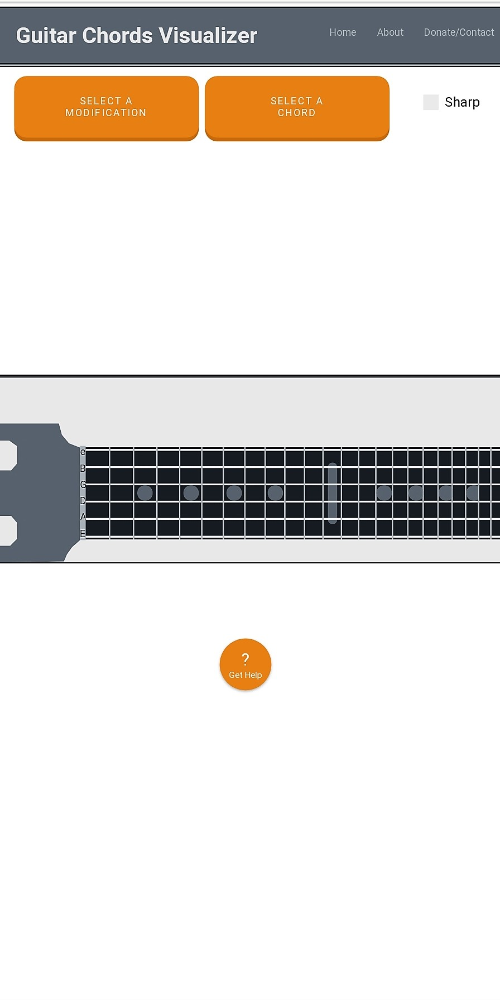
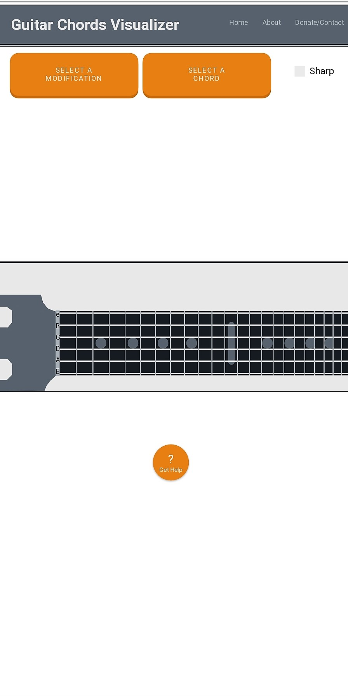
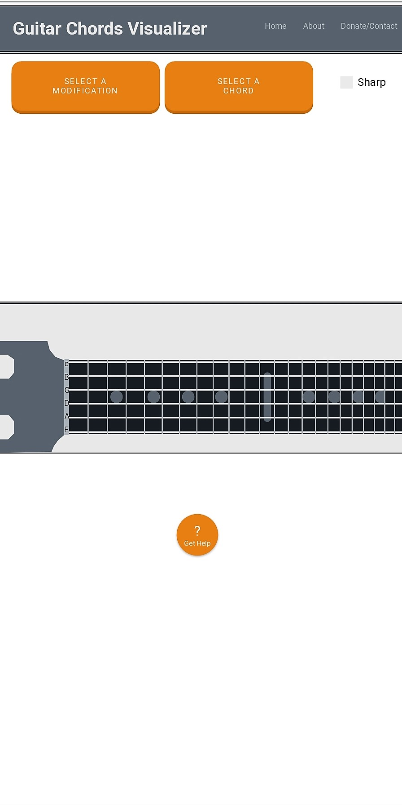

Chords Visualizer is Live!
An application that I have designed from scratch to aid in the process of understanding chords on the guitar. This is a solo project of mine created using HTML/CSS, JS(Json,JQuery), and hosted using AWS.
 

An application that I have designed from scratch to aid in the process of understanding chords on the guitar. This is a solo project of mine created using HTML/CSS, JS(Json,JQuery), and hosted using AWS.

My interest in programming started during my first programming course in high school and has continued through personal projects, my education at UNL/SCC, and numerous online courses.
Graduated Southeast Highschool: 2014
Attended UNL(Major:CompSci): 2014-2016
Attending SCC(Major Web/AppDev) Expected Graduation: Early 2019
Various Online Courses(Predominantly Udemy): 2014 - Present
Eye for good design principles,
Strong organizational skills,
Clear and concise writing for documentation,
I work effectively both independently or cooperatively,
Detail oriented,
Strong motivation and work ethic.
Create fun projects that improve my skillset,
Write quality, easy to read code,
Keep functions focused and leave quality documentation,
Test my code for errors/inefficiencies,
Keep up to date on best security practices,
Never stop learning.
Camera/3Play Operator & Producer, August 2015-March 2016
- Husker Vision
Software Development Intern, May 2019 - Present
- High Volume Oxygen
Computer Technician, July 2016 - Present
- Level Seven Computers
Social Media Manager, March 2019 - Present
Heritage Highway 136
Feel free to send me an email at jnelson3465@gmail.com, or fill out the form bellow and press send.